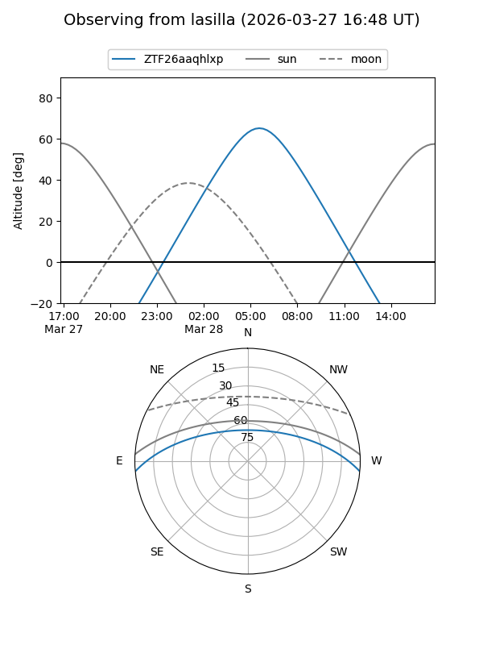
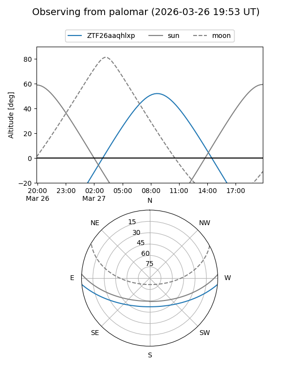

ZTF26aaqhlxp
Target ZTF26aaqhlxp at 2026-03-27 10:38
Aliases and brokers:
FINK: link
Lasair: link
ALeRCE: link
alt names
ZTF26aaqhlxp (ztf,fink_ztf)
Coordinates:
equatorial (ra, dec) = 197.9258,-4.36123
equatorial (HMS+DMS) = 13:11:42.18,-04:21:40.44
galactic (l, b) = (312.5325,+58.13226)
Flags:
Photometry:
last ztfg=17.60
1 ztfg detections
Lightcurve
Visibility


Additional plots